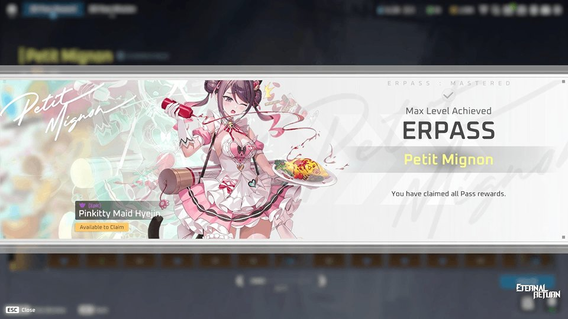
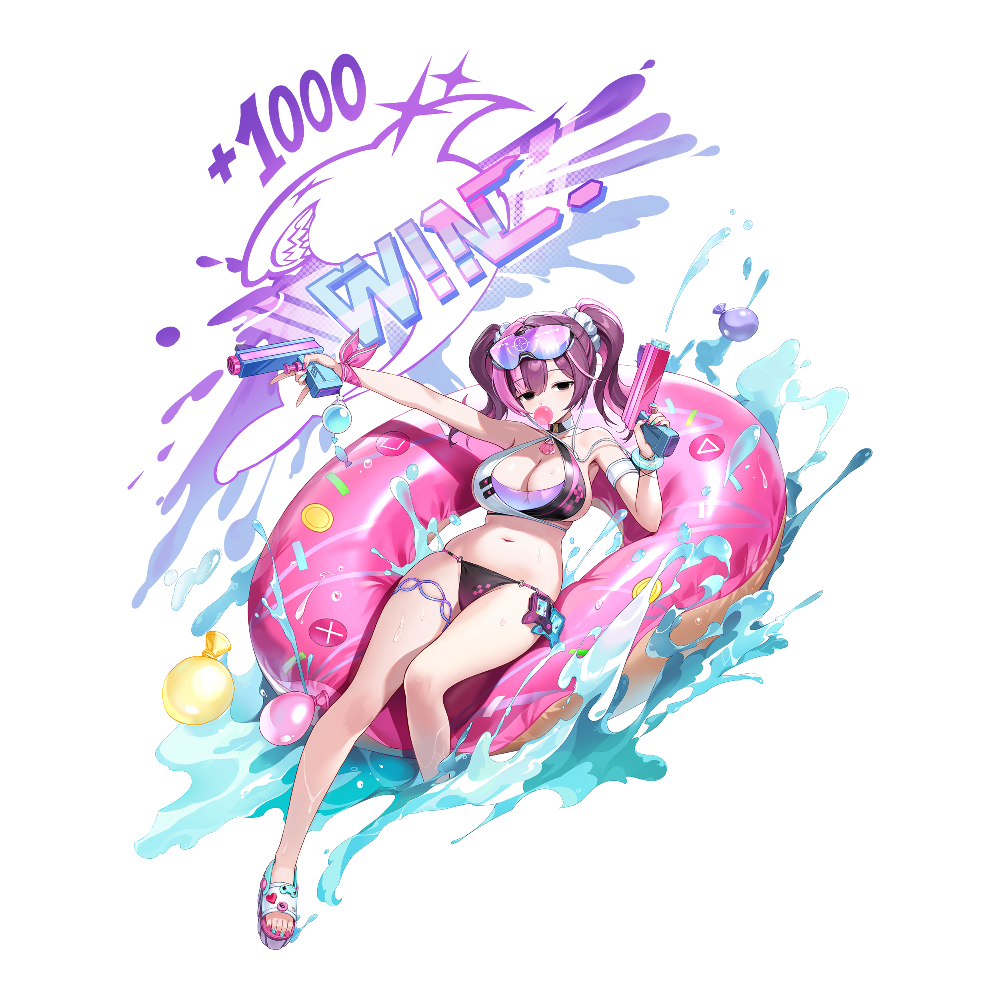
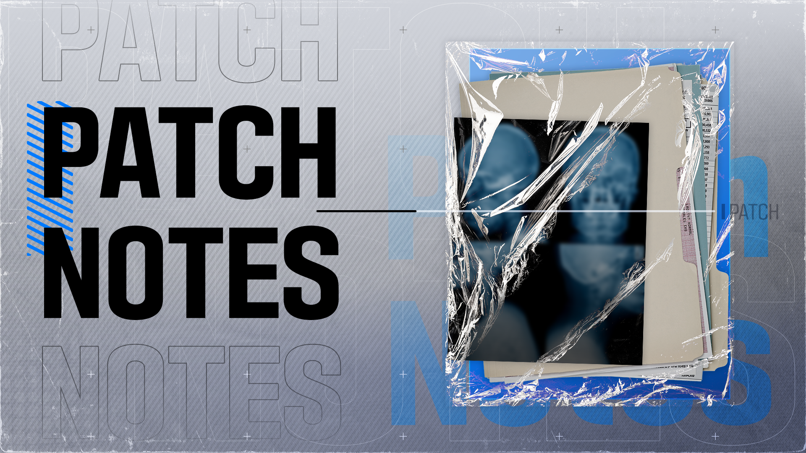

이터널리턴 시즌12 세일링 ER패스 얼리버드 판매기간ㆍ가격 총정리 (PC게임추천ㆍ할만한게임)
결론부터 말씀드리면, 세일링 ER패스는 아직 구매 버튼 자체가 안 열려 있습니다. 저도 궁금해서 오늘 직접 상점에 들어가 봤는데, 세일링 배너는 떠 있어도 ER 패스 구매 칸은 회색으로 막혀 있더라고요(오류인가(?) 싶었는데 그냥 아직 안 열린 거였어요). 이유는 간단해요 — 지금은 프리시즌이고, 정규 시즌12 '세일링(Sailing)'이 8월 13일부터 시작되면서 그때 같이 열리거든요. 그래서 이번 글에선 미리 알아두고 있다가 열리자마자 챙기시라는 취지로, 얼리버드 판매 기간ㆍ가격ㆍ포함 스킨까지 한 번에 정리해 드릴게요.
참고로 이번 정규시즌부터는 '실험체 관찰일지'라는 신규 콘텐츠도 같이 열리더라고요. 게임을 플레이하면서 캐릭터별 리포트랑 관찰 로그를 하나씩 풀어가는 방식인데, 패스 얘기로 바로 넘어가기 전에 시즌 자체가 꽤 알차게 시작한다는 것만 짚고 갈게요. 예전에 '이터널리턴 티어 정리와 시즌11 랭크 보상ㆍ쿠폰 총정리' 글에서 랭크 체계랑 시즌11 보상은 따로 다뤄봤는데, 이번엔 패스ㆍ재화 쪽만 새로 정리하는 거라 겹치는 내용은 없어요.

패스 얘기로 넘어가기 전에 살짝 보여드리면, ER 패스 최고 레벨 찍었을 때 뜨는 축하 연출이에요
이미지 출처: 이터널리턴 12.0 패치노트 Part.1 (공식) · 네이버 본문엔 받아서 재업로드 권장
얼리버드 판매 기간ㆍ가격부터 짚어볼게요
세일링 ER패스 얼리버드는 2026년 8월 13일 점검 후부터 8월 27일 점검 전까지 판매됩니다. 정규 시즌 개막(8/13)이랑 딱 맞물려 열리고, 대략 2주 정도만 얼리버드 가격으로 살 수 있는 구조예요.
| 구성 | 얼리버드가 | 정상가(얼리버드 종료 후) |
|---|---|---|
| ER 패스 | 890 NP | 1,250 NP |
| ER 플러스 | 1,750 NP | 2,550 NP |
| 업그레이드 | 1,050 NP | 1,450 NP |
참고로 이번 12.0 패치 자체는 8월 6일 오전 11시부터 오후 5시까지 약 6시간 점검으로 적용됐고, 시즌12 세일링 프리시즌은 그때부터 시작해서 8월 13일 점검 전까지 약 1주간 이어지는 거예요. 얼리버드 기간이 끝나면 셋 다 정상가로 돌아가니, 8월 27일 점검 전까지가 진짜 데드라인이라고 보시면 됩니다.
패스 사면 스킨 3종도 같이 챙겨요
세일링 ER 패스에는 레벨 보상으로 스킨 3종이 포함돼 있어요. 순서대로 보면 이렇습니다.
- '유릿빛 물결 타지아'(희귀) — 20레벨 보상
- '풍랑 위의 이정표 유민'(희귀) — 40레벨 보상
- '니아'(영웅, 물속성) — 80레벨 보상

80레벨까지 찍어야 만날 수 있는 영웅 등급 '니아'예요
이미지 출처: 이터널리턴 12.0 패치노트 Part.1 (공식) · 네이버 본문엔 받아서 재업로드 권장
영웅 등급인 '니아'는 80레벨까지는 찍어야 나오는 자리라, 만렙 목표로 잡고 달릴 분들은 참고해두시면 좋을 것 같아요.
패스 사면 스킨 말고 이런 보상도 레벨업으로 챙겨요
스킨만 받는 게 아니에요. 패치노트를 다시 읽어보니 ER 패스는 게임 플레이랑 미션 클리어로 ER 포인트를 모아 시즌 레벨을 올리는 방식이더라고요. 사자마자 한꺼번에 딸려오는 게 아니라, 시즌 내내 플레이하면서 레벨을 올릴 때마다 아래 같은 보상이 하나씩 풀리는 구조예요.
- 최대 900 NP
- 8,000 A-Coin
- 신규 킬 어나운스 아이콘 3종
- 신규 이모티콘 10종
- 신규 로비 스크린 1종
- 신규 프로필 배경ㆍ테두리 각 3종
여기에 드론ㆍ비석ㆍ스프레이ㆍ카메라ㆍ프로필 아이콘ㆍ어나운스 등등도 더 있어서 실제 목록은 이보다 훨씬 길어요. 그리고 세일링 토큰 100개는 시즌팩 즉시 보너스랑은 별개로, ER 패스만 사도 레벨업으로 채울 수 있는 항목에 포함돼 있더라고요 — 시즌팩 전용 혜택으로 알고 계셨다면 그건 아니에요. 즉 구매 즉시 받는 목록이 아니라 시즌 레벨업 누적 보상 카탈로그라고 보시면 돼요. 플레이 기간이 길수록 레벨업 기회가 많아지는 건 맞지만, 패치노트를 보니 늦게 사시더라도 그 사이 수행한 추가 미션은 소급으로 인정해준다고 하니 얼리버드를 놓쳤다고 너무 조급해하실 필요는 없을 것 같아요.
시즌팩이랑은 다른 상품이에요
헷갈리기 쉬운데, 세일링 시즌팩은 ER 패스랑 별개 상품이에요. 시즌팩은 이미 8월 6일 점검 후부터 할인 판매 중인데, 할인폭이 2단계로 나뉘어요. 8월 20일 점검 전까지는 정가 13,780 NP가 5,800 NP로(약 57% 할인), 8월 20일 점검 후부터 정규시즌12 종료까지는 6,400 NP로(약 53% 할인) 할인폭이 한 단계 줄어드는 구조라, 최대한 아끼려면 8월 20일 전에 사두는 게 낫더라고요. 구성은 신규 실험체 2종(루치아ㆍ세레스)에 신규 스킨 6종, 그리고 시즌팩 특별 구성품으로 별도 지급되는 영웅 등급 스킨 '벽파참랑 슈린'까지 묶여 있고요(슈린은 신규 스킨 6종과는 별개 항목이에요). 여기에 세일링 토큰 100개ㆍER Point 부스터 14일도 구매하자마자 바로 붙는 보너스로 딸려와요. 이 글에서 다루는 890~1,750 NP짜리 ER 패스랑은 가격대도 구성도 다르니, 상점에서 헷갈리지 말고 원하는 쪽으로 구매하시면 됩니다.

세일링 시즌 전체 비주얼이에요. 여름 느낌 물씬 나죠
이미지 출처: 이터널리턴 12.0 패치노트 Part.1 (공식) · 네이버 본문엔 받아서 재업로드 권장
3주년 이벤트는 이미 끝났어요
혹시 3주년 특별 출석부나 쿠폰 'THX3RDANNIVERSARY' 챙기려던 분 계시면, 이미 8월 6일 점검 전까지였어서 지금은 종료된 상태예요. 세일링으로 넘어오면서 자연스럽게 마감된 거라 굳이 따로 찾으실 필요는 없습니다. 그리고 이번에 확인한 바로는 지금 당장 입력할 수 있는 신규 쿠폰은 따로 없는 것 같아요🔍 신규 쿠폰 재확인. 나중에 새 쿠폰이 뿌려지면 그때 다시 정리해서 올려드릴게요.
자주 묻는 질문
Q. 프리시즌 기간(~8/13 점검 전)에도 미리 살 수 있나요?
아니요, 얼리버드 판매 자체가 정규 시즌 개막(8/13 점검 후)에 맞춰 열려서 프리시즌 동안은 상점에 구매 칸이 뜨지 않아요.
Q. 패스 레벨은 따로 뭘 눌러서 올리는 건가요?
아니요, 특별히 조작하는 게 아니라 게임 플레이랑 미션 클리어로 자연스럽게 ER 포인트가 쌓이면서 레벨이 올라가는 구조예요. 그냥 평소처럼 게임 돌리시면 레벨업 보상도 알아서 따라오는 셈이라 플레이 기간이 길수록 유리하긴 한데, 앞서 말씀드렸듯 늦게 사시더라도 그 사이 수행한 추가 미션은 소급 인정되니 얼리버드를 놓쳤다고 조급해하실 필요는 없어요.
Q. 시즌팩만 사면 ER 패스도 같이 따라오나요?
네, 따라옵니다. 패치노트를 다시 보니 프리시즌 기간 중에 시즌팩을 사면 ER 패스를 그 자리에서 바로 쓸 수 있게 돼 있더라고요 — 구매하면 우편으로 세일링 ER 패스가 지급되는데, 그걸 수령하면 바로 활성화되는 방식이에요. 반대로 ER 패스만 따로 사는 건 프리시즌 동안엔 안 되고 얼리버드 기간(8월 13일 점검 이후)부터 열려요. 그러니까 얼리버드까지 기다리기 아쉬우신 분이라면, 시즌팩을 먼저 사는 게 프리시즌 중에도 ER 패스를 바로 쓸 수 있는 사실상 유일한 방법이에요.
Q. 시즌팩 할인은 언제까지가 제일 저렴한가요?
8월 20일 점검 전까지가 5,800 NP(약 57% 할인)로 가장 저렴하고, 그 이후부터 정규시즌12 종료까지는 6,400 NP(약 53% 할인)로 할인폭이 줄어들어요. 최대 할인으로 챙기고 싶으면 8월 20일 전에 결제해두시는 걸 추천드려요.
참고한 곳
· 이터널리턴 12.0 패치노트 Part.1 (공식) — 2026.08.11 기준
· 이터널리턴 3주년 이벤트 공지 (공식) — 2026.08.11 기준